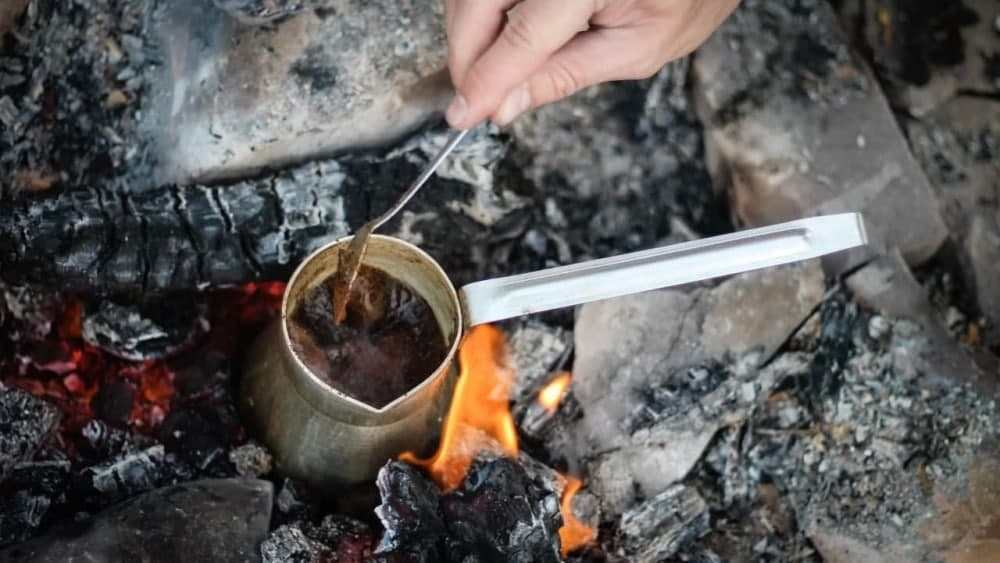

Cowboy Coffee Recipe

Cowboy coffee, coffee’s that’s made around a campfire with nothing more than beans, water and a pot,
can be terrible. It also can be as good as the coffee you made from hand-ground beans carefully
brewed with 200-degree water in your artisan glass French press. Below are two recipes for cowboy
coffee. One’s for when you want to send those pesky campers who invited themselves to your fire back
to their own campsite, spurting grounds out of their teeth. The other’s for when you want to enjoy
a fine cup of coffee around a peaceful fire.
Ingredients
- Ground coffee beans
- Water
- Nice old coffee pot
Instructions
- Add water to your pot and bring it to a boil.
- Once the water’s boiling, remove the pot from your fire and let it sit for 30 seconds. This will
lower the water temperature to 200°F — the perfect temperature for brewing coffee.
- Add 2 tablespoons of finely ground coffee for every 8 ounces of water. (You may want to measure
how much water your pot holds and how much coffee a spoon you bring holds before going camping so
you can measure accurately.)
- Stir the grounds into the water.
- Let the brew sit for 2 minutes and stir again.
- Let the coffee sit for 2 more minutes.
- After a total of 4 minutes of brewing, sprinkle a little cold water on the grounds. Yes, this
actually does help them settle to the bottom.
- Slowly pour the coffee, so the grounds remain on the bottom of the pot.